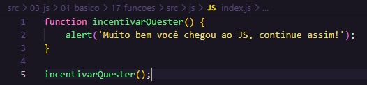
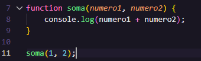
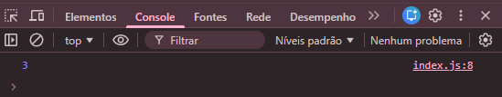
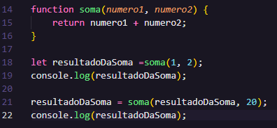
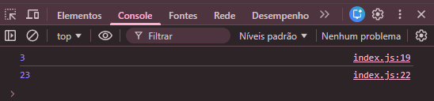
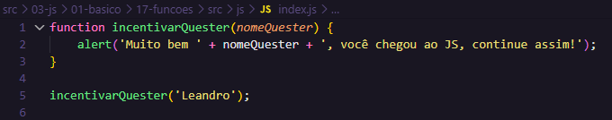

Funções são blocos de código que podem ser chamados e executados em qualquer parte do programa. Elas ajudam a organizar o código e evitar repetições.

Para chamar uma função, basta escrever seu nome seguido de parênteses:
incentivarQuester();
Essa função é um 'alert' que aparece assim que a página for carregada.
A próxima varemos apenas no consolte inspecionando o elemento no Dev Tools.


Agora se eu quiser retornar o valor de uma variável, posso usar a palavra-chave 'return' dentro da função:


Podemos também definir valores padrão para os parâmetros da função:

Aqui é o mesmo exemplo que na primeira foto, mas com os valores padrão definidos para os parâmetros.